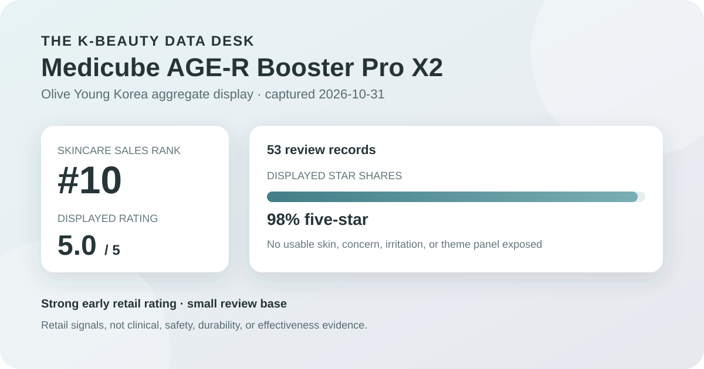
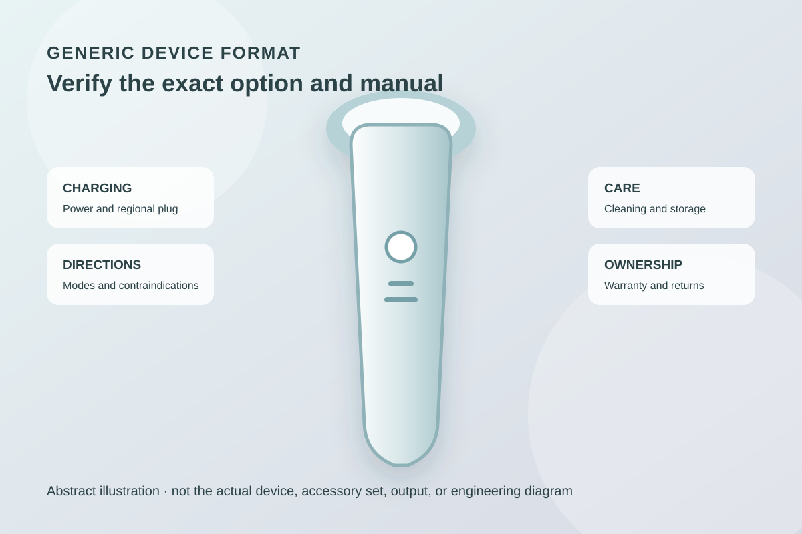

Data captured October 31, 2026. This analysis uses the retailer's displayed aggregate rating and star distribution. It does not copy or translate individual review text, names, or photos, and it makes no claim of firsthand device use.

The short version: Medicube AGE-R Booster Pro X2 appeared at number 10 in the captured skincare sales ranking. Its product header and detailed review view agreed on 5.0 out of 5 from 53 records. The rating is highly positive, but the base is small and the captured view exposed no usable shopper polls or aggregate topic summary.
The displayed average was 5.0 stars. The product header showed 53 review records, and opening the detailed review view repeated both the 5.0 score and the 53-record total. This cross-surface agreement reduces the risk of pairing the wrong review panel with the ranking listing, which is especially relevant when a page offers multiple options or promotional configurations.
The detailed review view displayed these rounded star shares:
The displayed rows total 100%. Five-star selections dominate, but a 98% five-star share is not a 98% success rate. The page does not establish that every record reflects the same device color, option, accessory bundle, firmware state, application routine, skin-care products, or length of ownership. It also does not provide independently audited buyer verification.
The average is rounded to one decimal place. A 5.0 display therefore does not mean every underlying score was identical, nor does it prove perfect performance. The visible 2% three-star share itself shows some rating variation. With only 53 records, a small number of future ratings could move the distribution more noticeably than they would on a listing with thousands of records.
Fifty-three records can reveal that the initial retail response was strongly positive, but it cannot establish a mature long-term pattern. Early buyers may differ from later mainstream buyers in familiarity with beauty devices, motivation, tolerance for setup, or willingness to pay. Promotions and launch collections can also attract a concentrated audience.
The captured aggregate does not show how many reviewers used the device for a comparable period, whether every person selected the same option, or whether ratings changed after extended ownership. It provides no repair history, battery-retention series, return rate, warranty-claim rate, or independent reliability audit. Those omissions are material for a high-priced device, because a favorable unboxing impression and long-term ownership quality are not the same question.
Unlike many topical skincare listings on the site, this device review view did not expose a usable skin-type poll, concern poll, irritation poll, or anonymous automated topic summary at capture. I did not infer any of those fields from profile images, isolated reviews, promotional claims, or the device's name.
This absence narrows what can responsibly be said. There is no captured percentage supporting a dry-, combination-, or oily-skin audience; no aggregate gentle or irritation response; and no retailer-generated theme set indicating what the recent-review subset discussed most often. The article therefore stays with the rating distribution and purchase-context questions that were actually visible.

The retailer categorizes this listing as a skincare device. The captured title described an upgraded Booster Pro X2 promotional collection with a head cap, stand, pouch, and hairpin. That title establishes only how the listing was marketed on the capture date. It does not independently verify the specifications, operating modes, output levels, materials, battery capacity, charging time, app requirements, waterproofing, included accessories for every option, or results.
I did not operate or inspect the device. The illustration above is intentionally generic and should not be read as a reconstruction of its shape, controls, treatment head, light, output, or accessory set. Buyers should use the current regional product page, manual, and box contents—not this abstract graphic—to confirm what is included and how it should be operated.
At capture, the Korean page displayed a ₩418,800 reference price and options starting at ₩349,000. The “starting at” wording matters: the final price and contents may depend on the selected option. Coupons, membership benefits, gifts, inventory, delivery eligibility, warranty terms, and bundle composition can change independently.
The 53 review records may span other offers or configurations. They do not prove that every reviewer bought the exact Jo & Friends collection, received every named accessory, or paid the same amount. Before comparing value, verify the selected device version, color, accessory list, regional warranty, return window, charging standard, app compatibility, and final checkout total.
A consumer skincare device can involve instructions and contraindications that a retail star score cannot summarize. Read the current manual before use, including where and how often the device may be applied, compatible products, cleaning and storage steps, charging guidance, and circumstances in which use should be avoided. Do not assume that a mode is appropriate merely because the overall rating is high.
Questions involving a skin condition, implanted or electronic medical device, pregnancy, medication, recent procedure, eye-area use, broken skin, or unusual sensation require appropriate guidance from the manufacturer and a qualified professional. This article does not substitute for that guidance. If the device or manual conflicts with a personal care plan, the specific safety instructions take priority over retail popularity.
Medicube AGE-R Booster Pro X2 was the first valid unpublished product after nine higher-ranked listings matched already-covered product families. It held skincare sales rank 10, and the ranking and detail titles agreed. The product header and detailed review view both displayed 5.0 stars from 53 records, with a 98% five-star share and a 2% three-star share.
That is a favorable early retail signal, not a verdict on effectiveness or ownership quality. The small base, lack of usable shopper polls, and absence of aggregate topic data leave important questions unanswered. For this category, exact option contents, warranty, manual, contraindications, maintenance, and return terms are more decision-relevant than the rounded star average alone.
The strongest use of this snapshot is to confirm that the listing had a highly positive but still small review base on October 31, 2026. A buyer should then verify the current regional documentation and compare the total ownership terms with other devices before deciding.
Method note: Numbers are transcribed from Olive Young Korea's live aggregate display on the capture date. Percentages are reported as displayed and are not converted into estimated reviewer counts. Individual review text, reviewer names, product photographs, and reviewer photographs were not copied, translated, paraphrased, or reproduced. This is editorial analysis, not medical advice or a claim of firsthand use.
Source: Olive Young Korea product page (captured October 31, 2026). Store links contain no affiliate ID.
← All reviews · Review-volume rankings · Skin-type poll index · Methodology